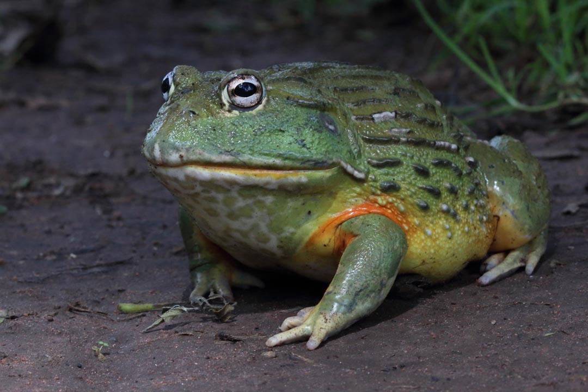

La rana toro es un anfibio grande conocido por su fuerte sonido, que se asemeja al mugido de un toro. Vive en zonas húmedas como lagos y ríos.

La rana toro puede comer presas casi de su mismo tamaño, incluyendo otras ranas.